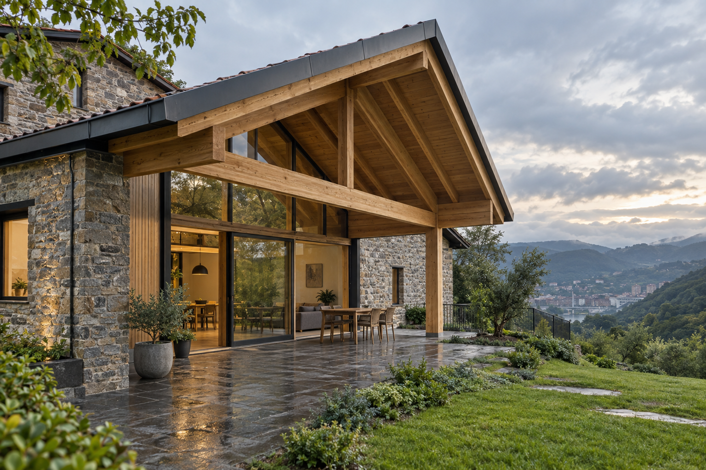

Carpintería, estructuras y cubiertas · Desde 1988
La madera no admite atajos.
Estudiamos, proyectamos y ejecutamos cada obra con un único equipo: desde la elección de materiales y los permisos hasta la entrega final.
Qué hacemos
La solución empieza por tu tipo de obra.
Desde una pieza de carpintería hasta una cubierta o una reforma completa: cuéntanos qué necesitas y estudiaremos cómo abordarlo.
Carpintería a medida
Soluciones de madera para vivienda, local y obra nueva, ajustadas al uso y a los detalles del proyecto.
Cubiertas y estructuras
Estructuras de madera y hormigón, cubiertas y casas de madera con estudio técnico previo.
Gestión integral
Coordinación parcial o completa: propuesta, permisos, ejecución y entrega llave en mano.

Muestra visual del diseño
Imagina el resultado antes de empezar.
Este espacio mostraría obras reales de la empresa, con fotografías, materiales y el reto resuelto en cada una. La imagen de esta propuesta es conceptual y no corresponde a un trabajo de César Fernández.
Cómo trabajamos
Sabes qué sucede en cada fase.
Desde la primera conversación hasta la entrega, estudiamos el alcance y te acompañamos en las decisiones de materiales, permisos y ejecución.
Primera conversación
Tipo de obra, ubicación, necesidades, ideas y plazo aproximado.
Estudio y materiales
Revisión técnica, alternativas y selección responsable de materiales.
Propuesta y permisos
Alcance claro, presupuesto y, si se necesita, gestión previa de la obra.
Ejecución y entrega
Coordinación del trabajo y seguimiento hasta el resultado final.
Preguntas frecuentes
Antes de empezar una obra.
¿Puedo consultar una idea aunque aún no tenga planos?
Sí. Puedes explicar el tipo de obra, la ubicación y el plazo que tienes en mente. Después se valorará qué información técnica hace falta.
¿También os encargáis de los permisos?
La empresa indica que puede gestionar la obra desde el estudio y la solicitud de permisos hasta la entrega. El alcance concreto se definiría en cada presupuesto.
¿En qué zonas trabajáis?
Principalmente en Bizkaia y provincias limítrofes. Consulta directamente si tu proyecto está en otra zona.
Consulta mejor preparada
Define lo esencial en treinta segundos.
Tu consultaEnviar consulta preparada →
Vizcaya y provincias limítrofes